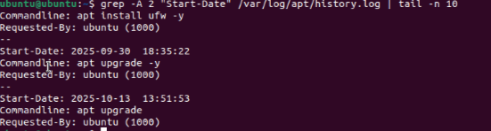
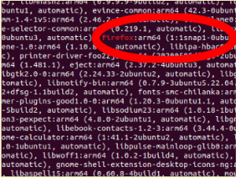

Types of Networks & Connections and Devices
1. Project Overview
Problem Statement:
Objectives:
Success Criteria:
2. Design & Planning – Authentication Concepts & Password Algorithm
Password Security Foundations
Designed Password Algorithm
Algorithm Steps:
3. Technical Development – Implementing Authentication & Security
Connections that Share Data and Resources
In this activity, sort different devices into four different network types: Personal Area Network(PAN), Local Area Network(LAN), Metropolitan Area Network(MAN), Wide Area Network(WAN). Typically, in daily life, all four different networks are used. For the PAN, it is whenever you are connecting or using different personal device, like an iPhone. For LAN's, it is often used in your workplaces or at school. MAN's are used to connect different network across city areas, like traffic signals. Finally, WAN's are used to connect the whole world together, like the internet. Each network scales up and connects with both larger and smaller ones.
Sorted Devices in Networks:

Successful Password Change:

Enabling Multi-Factor Authentication (MFA)
System Patching and Updates
Software patching was performed to fix vulnerabilities and ensure up-to-date security protection.
| Software | Command Used | Findings |
|---|---|---|
| Check for updates | sudo apt update |
26 available updates found |
| Install updates | sudo apt upgrade |
Packages updated successfully |
| Review update history | cat /var/log/apt/history.log |
Listed dates, versions, and installed packages |
| Count installation events | grep "Install:" /var/log/apt/history.log |
Installation events |
| Identify recent updates | grep -A 2 "Start-Date" |
Latest update: October 13, 2025 |
| Check specific packages | grep "nano", grep "firefox" |
Found last updates for each program |
| Inspect recent log | tail -n 20 /var/log/apt/history.log |
Confirmed most recent patching session |
Recent Patch Updates: 
Firefox Patch Update: 
4. Testing & Evaluation – Outdated Software
All implemented security measures were tested for proper operation.
| Security Feature | Test Performed | Verification Result |
|---|---|---|
| Password Strength | sudo ls /root (with new password) |
Access granted, confirming correct password update and admin rights |
| MFA Authentication | SSH login prompt for verification code | Both password and generated 6-digit code required |
| Patch Confirmation | /var/log/apt/history.log |
Show updates installed |
| Automatic Updates | ls -l /var/lib/apt/periodic/ |
Displays schedule of files automatically updated |
Check Automatic Updates:

Why Patching Matters/Outdaded Software:
System patching is important because hackers can exploit known vulnerabilities that have already been patched in other systems using exploits in the wild. These unpatched systems could easily allow in data leaks and breaches through many different doors. Additionally, there may be zero-day vulnerabilities, security flaws that aren’t recognized by the user, therefore no patches available. If hackers are able to find these zero-day vulnerabilities they could easily enter the system and the fix would take a while depending on if the user even found the leak. To ensure that patching happens, you could always try to use automatic updates so the computer always stays patched and up to date.
5. Reflection
Through implementing layered security controls, this unit demonstrated the practical relationship between authentication, authorization, and system maintenance. Secure passwords protect confidentiality and MFA safeguards protect integrity by ensuring that access is verified. Additionally, consistent patching preserves availability by maintaining a functional and resilient system to both bugs and attacks.
These activities reinforced the principle that cybersecurity requires defense in depth—multiple layers working together rather than relying on a single control. The Ubuntu password algorithm exercise showed how unpredictability and length drastically reduce guessing risk. MFA through Google Authenticator demonstrated real-world two-factor authentication methods used by major organizations, adding an essential safeguard against stolen credentials and hackers.
Patching the VM provided insight into how software vulnerabilities are discovered and fixed, highlighting the importance of staying updated against known and zero-day exploits. Regular updates also prevent attackers from using exploits in the wild that target unpatched systems. Patching helps to protect against "open doors" in systems for hackers to break there way into.
Overall, this unit illustrated the importance of proactive protection to ensure cyber attacks don't happen and data isn't lost.